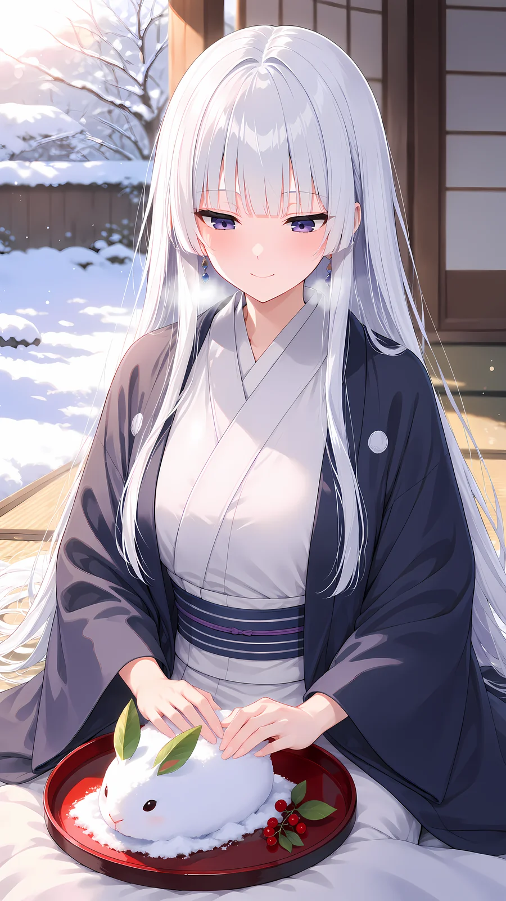
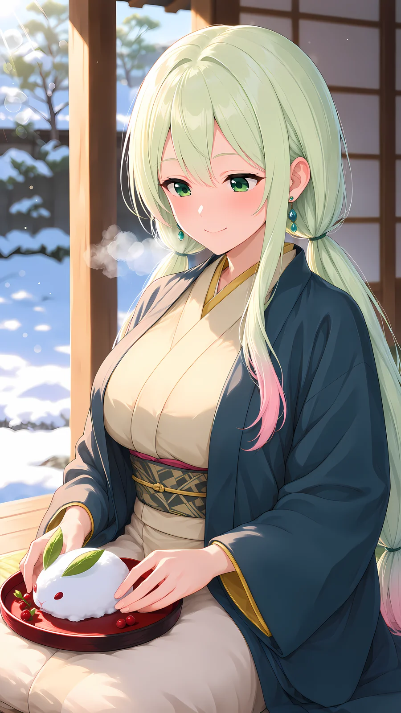
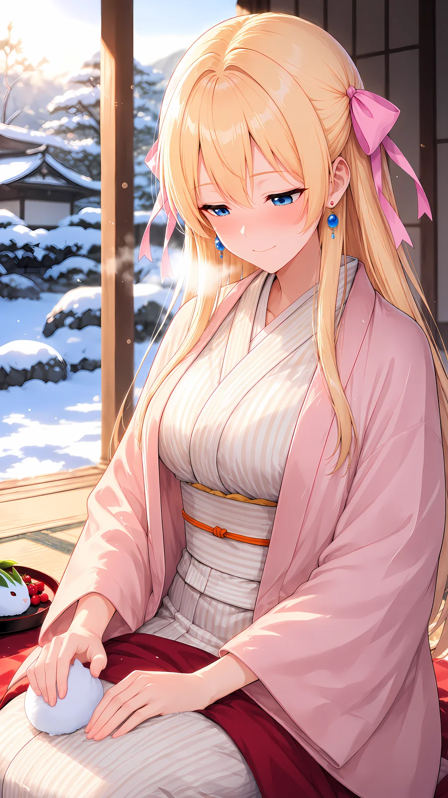

雪の朝の縁側で、お盆の上の雪うさぎに赤い実の目をつけてほほえむ（ComfyUI シーンのプロンプト）
ひみつの眠り姫のプロンプト配布
ComfyUI 用2026-11-21
ComfyUI（Anima）に貼るだけで、冬の和の一枚に。雪がやんだ朝の古いお屋敷の縁側で、羽織をはおってひざに毛布をかけた女の子が、お盆の上の小さな雪うさぎに、赤い実の目と緑の葉の耳をつけて、できあがりを見つめてほほえみます。庭いちめんの雪と、朝の光にきらめく雪の粒まで出ます。LoRA がある人とない人の2通りの書き方を載せてあります。
作例



※作例の画像の転載・保存しての再配布はご遠慮ください。
3人のおしゃべり（雪の朝の雪うさぎ）

ティルナ
ねえねえ、朝いちばんの雪で、雪うさぎを作ったよ！ 縁側のお盆に並べてあるの！

セフィリア
では、わたくしが審査員なのです。耳の葉っぱの角度から、しっかり見るのです
リリア
……わたしも、ひとつ作りました。あとは、赤い実の目を入れるだけです
ティルナ
早く早く！ 目が入ると、いっきに雪うさぎらしくなるんだよ！
リリア
……赤い実の目を入れて、葉っぱの耳を立てました。紺の羽織のまま、お盆の雪うさぎに両手を添えています
セフィリア
審査のついでに、ご案内なのです。この縁側の雪の朝を、Anima のモデルと ComfyUI でそっくり呼び出せる呪文を配るのです
ティルナ
雪の朝にしか見られない景色だよ！ あなたの子にするなら、最初の行を髪と目の色に直すだけ！
セフィリア
羽織とひざの毛布と縁側は、呪文に織りこみ済みなのです。学習データのない子のための、見た目を言葉で書く呪文もそろえたのです
ティルナ
同じ文で焼いたわたしは、深緑の羽織！ 赤いお盆の雪うさぎに手を添えて、白い息がふわって出てたよ！
セフィリア
わたくしはピンクの羽織なのです。……雪うさぎはまだ形づくっている途中で、できあがった子はうしろのお盆にいたのです
リリア
……目を入れたとたん、雪うさぎがこっちを見た気がして、手が止まってしまいました
セフィリア
それは、よくできた証拠なのです。リリアの雪うさぎに、満点をあげるのです

リリア
では三匹をお盆に並べて、とけるまで縁側でいっしょに眺めましょう。あなたの子の雪うさぎも、となりに並べてください
使い方（3ステップ）
- ComfyUI で Anima のモデルを読み、基本の画像生成（テキストから画像）の画面にする
- 下の A（LoRA なし）か B（LoRA あり）のポジティブと、ネガティブをワンタップでコピーして貼る
- 「推奨値」の大きさ・steps・CFG にして生成する（できれば 1.5 倍の hires fix も）
プロンプト
変えるのは1行目の色の付いたところだけ（先頭の
1girl, solo などはそのまま）- 使うプロンプトは2通り＝A. LoRA を持っていない人／B. 自分のキャラの LoRA を持っている人。どちらも丸ごとコピーして貼るだけ
- A はそのままでも綺麗な女の子で出ます。自分のキャラにするなら1行目の髪の色・髪型・目の色を書き換えるだけ
- B は1行目の
your_lora_triggerを自分の LoRA のトリガー語に置きかえるだけ（LoRA の強さは下の表） - 2行目から下（シーン）と、ネガティブプロンプトは変えずにそのまま
- 🚫 版権キャラの名前・版権キャラの LoRA を入れて使うのは固く禁止です（下の「配布ルール」）
A. LoRA を持っていない人（そのままでもOK）
ポジティブプロンプト
1girl, solo, very long hair, white hair, blunt bangs, purple eyes masterpiece, best quality, score_7, safe, cowboy shot, sitting, seiza, looking down, smile, closed mouth, blush, snow bunny, tray, berry, leaf, haori, kimono, long sleeves, blanket, earrings, engawa, japanese house, snow, tree, outdoors, morning, sunlight, breath, color contrast, depth of field, bokeh, light particles
B. 自分のキャラの LoRA を持っている人
ポジティブプロンプト（LoRA 用）
masterpiece, best quality, score_7, year 2025, highres, absurdres, your_lora_trigger, 1girl, solo, cowboy shot, sitting, seiza, looking down, smile, closed mouth, blush, snow bunny, tray, berry, leaf, haori, kimono, long sleeves, blanket, earrings, engawa, japanese house, snow, tree, outdoors, morning, sunlight, breath, color contrast, depth of field, bokeh, light particles
| LoRA のつなぎ方 | Load Diffusion Model（Anima）のうしろに LoraLoaderModelOnly を1つ足す（CLIP にはつながない） | |
|---|---|---|
| LoRA の強さ（strength_model） | 0.8〜0.9（作例は 0.85） | |
| 1行目 | your_lora_trigger を自分の LoRA のトリガー語に置きかえる（髪や目の色は LoRA が覚えているので書かなくてOK） | |
ネガティブプロンプト（B 用）
lowres, bad quality, worst quality, score_1, score_2, score_3, poorly drawn, flat color, sketch, jpeg artifacts, mutated, ugly, disfigured, long body, bad anatomy, bad hands, missing fingers, extra fingers, simple background, transparent background, blurry, furry, child, loli, chibi, baby face, signature, watermark, artist name, username, web address, patreon username, logo, detailed pupils, sparkling eyes, twinkling eyes, glowing pupils, glowing eyes, star-shaped pupils, colored highlight in pupil, blonde hair, pink hair, cat ears, animal ears, red eyes, tall, long legs, wide hips, thick thighs, curvy, voluptuous, amazonian, statuesque, 8 heads tall, elongated body, extra fingers, missing fingers, fused fingers, bad hands, deformed hands, extra arms, extra legs, text, letters, signboard, sign, banner, label, japanese text, numbers, mirror, reflection, window reflection, glass reflection, 2girls, male, crowd, people, bag, umbrella, hat, christmas tree, cat, animal, rabbit, real rabbit, fire, night, snowman, chinese text, korean text, kanji, hiragana, katakana, calligraphy
作例の絵（ポストの絵）は、この B のポジティブとネガティブで作りました（
ネガティブの「blonde hair、pink hair、cat ears、animal ears、red eyes、tall、long legs、wide hips、thick thighs、curvy、voluptuous、amazonian、statuesque、8 heads tall、elongated body」は作例の子のために足した語です。自分のキャラに合わなければ消してOK。
your_lora_trigger のところに、その子の LoRA のトリガー語と見た目の語を入れただけ・語の順番もこのまま）。そのあと手だけを描き直す仕上げと 4K への拡大をしています。ネガティブの「blonde hair、pink hair、cat ears、animal ears、red eyes、tall、long legs、wide hips、thick thighs、curvy、voluptuous、amazonian、statuesque、8 heads tall、elongated body」は作例の子のために足した語です。自分のキャラに合わなければ消してOK。
ネガティブプロンプト（A 用）
worst quality, low quality, lowres, bad anatomy, bad hands, extra fingers, missing fingers, fused fingers, blurry, jpeg artifacts, text, watermark, signature, logo, extra person, multiple girls, cropped, out of frame, extra fingers, missing fingers, fused fingers, bad hands, deformed hands, extra arms, extra legs, text, letters, signboard, sign, banner, label, japanese text, numbers, mirror, reflection, window reflection, glass reflection, 2girls, male, crowd, people, bag, umbrella, hat, christmas tree, cat, animal, rabbit, real rabbit, fire, night, snowman, chinese text, korean text, kanji, hiragana, katakana, calligraphy
必要なもの（ComfyUI）
🧩 カスタムノードは使っていません。LoRA が無くても大丈夫（A のプロンプト）。ComfyUI の基本の画像生成（テキストから画像）に、ポジティブ・ネガティブを貼って、下の推奨値にするだけです。LoRA を使う人は「LoraLoaderModelOnly」を1つ足すだけ（B のプロンプト）。
| モデル | ファイル | 置き場 |
|---|---|---|
| Anima 系のモデル（本体） | お好きな Anima 系のモデル | models/diffusion_models |
| テキストエンコーダ | Anima と一緒に配られているもの | models/text_encoders |
| VAE | Anima と一緒に配られているもの | models/vae |
推奨値
| 大きさ | 864×1536（縦長） | |
|---|---|---|
| steps | 30 | |
| CFG | 4.5 | |
| sampler | er_sde | |
| scheduler | beta | |
| hires fix（任意） | 1.5 倍に拡大して denoise 0.4・同じ steps と CFG（試し焼きはこれ） | |
| LoRA | 無くてOK（A のプロンプト）。自分のキャラの LoRA があれば B のプロンプトで | |
メモ
- いちばん上の行（髪の色・長さ・目の色）だけ、あなたの子に合わせて書き換えてください。2行目から下（羽織・縁側）は変えなくて大丈夫です。
- 縦長（864×1536）で、太ももから上の構図（cowboy shot）です。縁側に正座して（sitting, seiza）、お盆の上の雪うさぎを見下ろしてほほえみます（snow bunny, tray, berry, leaf, looking down, smile, closed mouth, blush）。作例では、葉っぱの耳と赤い実のついた雪うさぎに手を添えて、ほほえみました。羽織の色は子ごとに変わり、セフィリアの絵では、ひざの上の雪のかたまりを手で形づくっているところで、お盆の雪うさぎはうしろに置かれました。
- 服は haori・kimono・long sleeves・blanket。小物は earrings です。
- 場所は engawa・japanese house・snow・tree・outdoors・morning・sunlight、白い息は breath、ボケと光の粒は depth of field・bokeh・light particles です。
- 字が出ないように text を、本物のうさぎや動物が出ないように rabbit・real rabbit・animal・cat を、雪だるまにならないように snowman を、帽子をかぶらないように hat を、夜にならないように night を NEG に入れてあります。南天の実（nandina）は語が効かないので、berry と leaf で赤い実と葉にしています。
配布ルール
- ⭕ プロンプトの改変は自由です。
- ⭕ 生成した画像は SNS に投稿して大丈夫です。
- ❌ プロンプト文そのものの転載・再配布・販売はしないでください。
- ❌ 自作のプロンプトだと名乗ることはやめてください。
- ❌ このページの作例画像の無断転載はしないでください。
- 🚫 アニメ・漫画・ゲームなどの版権キャラクター（著作権・商標のあるキャラ）、他の人のキャラクターやイラスト、実在の人物の写真を添付画像にして使うことは固く禁止します。版権キャラの名前や、版権キャラの LoRA を入れて使うことも禁止です。
- ✅ 添付してよいのは、自分で作ったキャラクター・自分が権利を持つ画像（または権利者から使ってよいと言われた画像）だけです。
- ⚠️ 生成した画像の使い方（投稿・公開など）は、使った人の責任でお願いします。権利の問題が起きても、配布者は責任を負えません。
- 💌 使ったら #眠り姫プロンプト を付けて見せてくれたら、とても嬉しいです（任意です）。
📚 これまでの配布プロンプト（バックナンバー）が見たい方は、直接ひみつの眠り姫までお気軽にお問い合わせください。